もう当分ファイヤー・スチールは買わなくてもいいだろうと思えるだけ、ファイヤー・スチールを買い揃えました。もちろん少しずつ買いそろえていったものです。
小さい順に左から並べた写真が、下の写真になります。
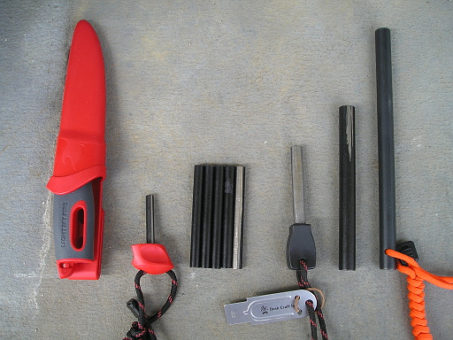
左からライト・マイ・ファイヤーのファイヤー・ナイフに付属しているファイヤー・スチール・ロッド、次に YZG のフェロセリウム・ロッド 8 × 80mm 5 ピース、次にブッシュクラフト Inc. のファイヤー・スチール、YZG のフェロセリウム・ロッド 13 × 130mm、ブッシュクラフト Inc. のファイヤー・メーカーです。
それぞれ、どれくらいの大きさかわかりにくいと思ったので、実際に手に持ってみました。
最初はライト・マイ・ファイヤーのファイヤー・ナイフに付属しているファイヤー・スチール・ロッドです。これが一番小さいです。
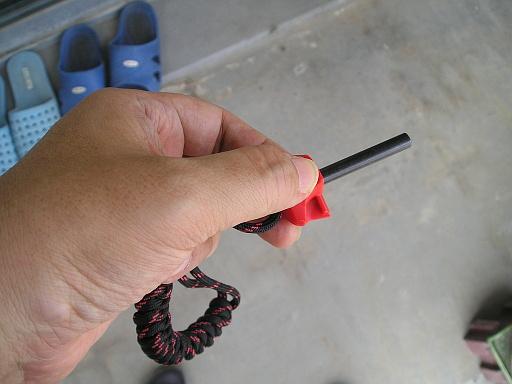
次に YZG のフェロセリウム・ロッド 8 × 80mm です。5 本セットなので気兼ねなくバシバシ擦れます。全体的にまんべんなく削れて欲しいので、手で持つハンドルはつけていません。
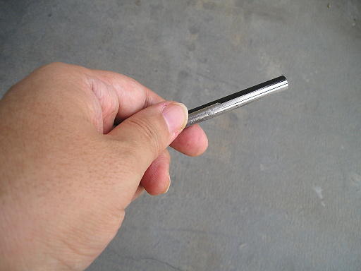
次にブッシュクラフト Inc. のファイヤー・スチールです。このファイヤー・スチールにはストライカーと、火口になる 550 Fire Code が同梱されています。練習等に使っているので、一番すり減ってます。
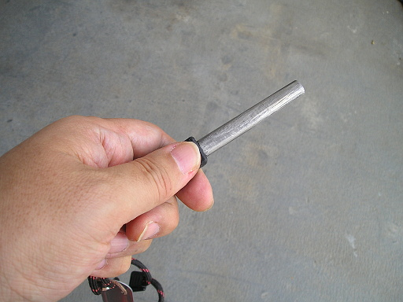
次にいきなり太く長くなりますが、YZG のフェロセリウム・ロッド 13 × 130mm です。
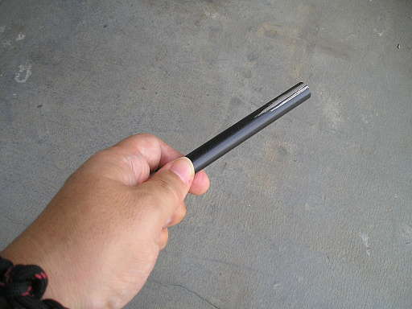
最後はブッシュクラフト Inc. のファイヤー・メーカーです。これは巨大です。レシートなどはなんの加工もほどこさずに着火可能だそうです。が、自分はまだなんの加工もしていないレシートへの着火に成功していません。近日中に YouTube で動画を公開するそうなので、動画の公開が待たれます。
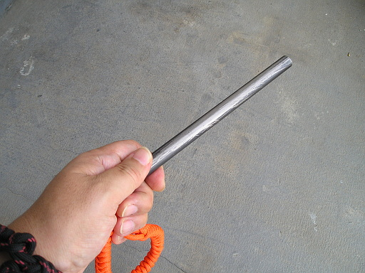
以上が今持っているファイヤー・スチールの全てです。
さて、ご存知かもしれませんが、ファイヤー・スチールはロッドだけ持っていても、火花を飛ばすことはできません。ストライカーが必要です。実際にロッドとストライカーを使って、火口を発火させている動画を紹介します。1 分 5 秒あたりから、火口に着火させています。
このようにファイヤー・スチール・ロッドとストライカーは組で使うものです。が、私、ストライカーは下のブッシュクラフト Inc. のファイヤー・スチールに付属するものしか持っていませんでした。
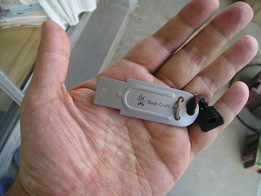
またナイフのブレード・バックの角がたっていると、ナイフのブレード・バックをストライカーの代わりに使えることを知っていたので、ライト・マイ・ファイヤーのファイヤー・ナイフのブレード・バックをストライカーの代わりにしてみたり、
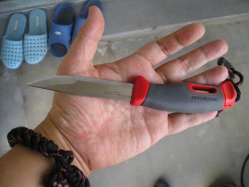
やはりオピネルの No.8 のブレイド・バックが角がたっているので、オピネルのブレード・バックをストライカーの代わりにしてみたり
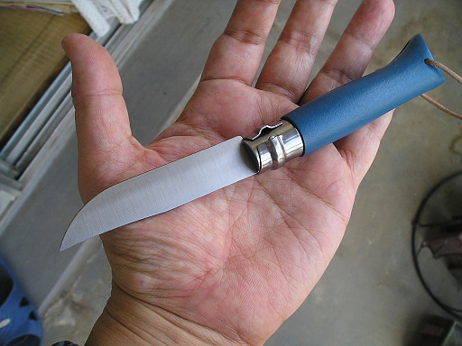
していたのですが、ナイフのブレードが傷みそうな気がして、できればナイフは使いたくないなぁ、と思っていました。
そう思っているうちに幾数月。twitter でファイヤー・スチール・ストライカーをハンドメイドで作っている人がいることをたまたま知り、その人が YouTube でストライカーの製造過程を記録した動画を公開していることを知りました。
以下の４つの動画がそれです。
それで完成したのがACE-Kraft さんのファイヤー・スチール・ストライカーです。下の動画はファイヤー・スチール・ストライカーの広報動画です。
私は Web ショップオープンとほぼ同時に購入しました。
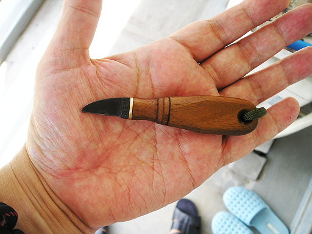
大きさは下の写真のように、オピネルの No.8 をたたんだ状態よりすこし小さいくらいです。
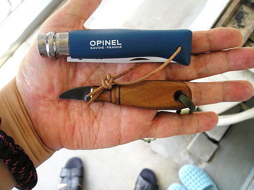
使ってみた感想ですが、ブッシュクラフト Inc. のファイヤー・スチールに付属するストライカーや、ライト・マイ・ファイヤーのファイヤー・ナイフのブレード・バック、オピネルの No.8 のブレイド・バックと比べて若干エッジの立ち上がりが弱く、火花を飛ばそうとするとブレードを垂直近くにする必要があり、それでも飛ぶ火花の量はブッシュクラフト Inc. のそれや、２本のナイフのブレード・バックより少ないという感じです。
もっと火花を飛ばすコツがあるかもしれないので、しばらく使い込んでみたいと思います。